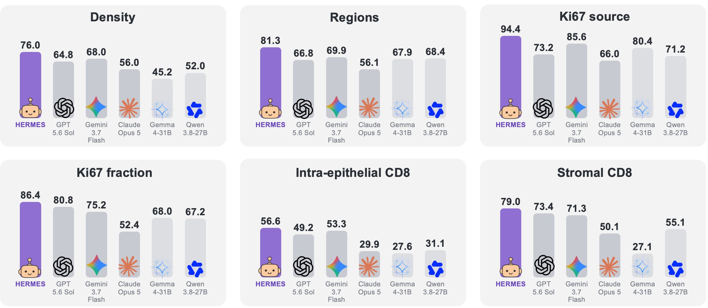
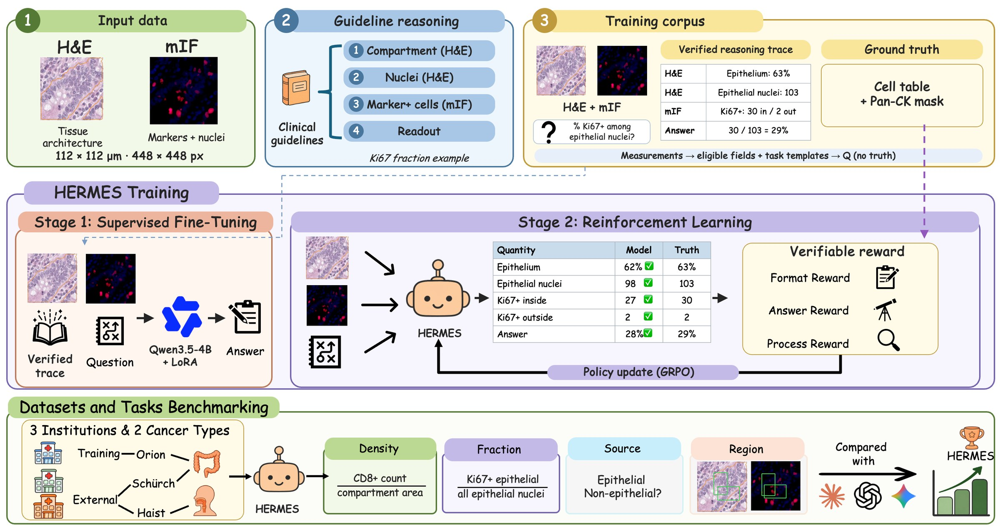
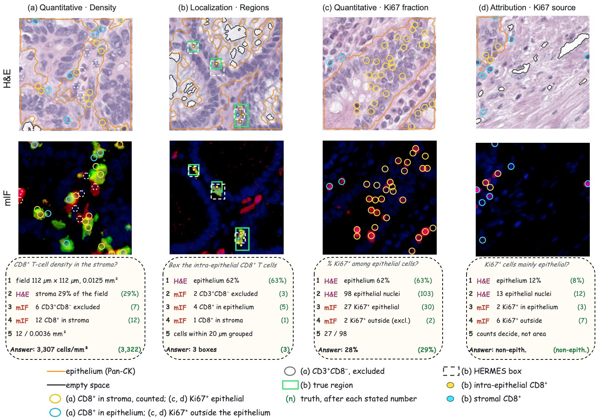
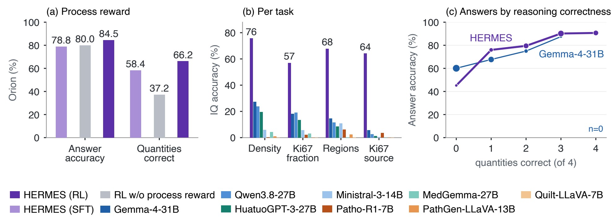
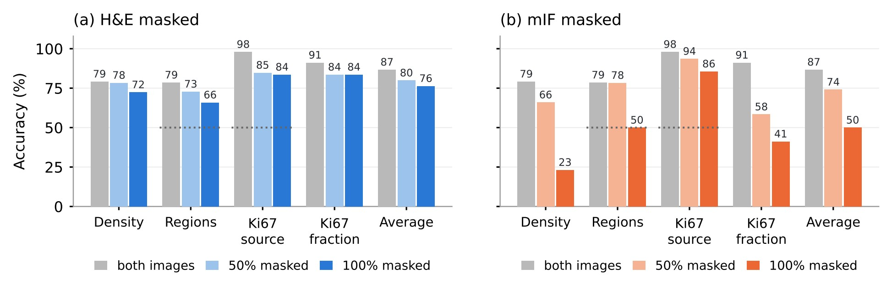

Interpretable Tumor Immune Microenvironment Reasoning from H&E and mIF

Readouts of the tumor immune microenvironment (TIME), such as CD8+ T-cell density, intra-epithelial infiltration and the Ki67 index, combine tissue architecture from H&E with cell phenotypes from multiplex immunofluorescence (mIF). Multimodal large language models (MLLMs) could automate these readouts with an explanation, but two gaps remain. First, pathology MLLMs, including R1-style ones trained with reinforcement learning, have not learned to read mIF together with H&E. Second, R1-style rewards check only the final answer, so the reasoning is neither required to follow clinical guidelines nor verified.
Same-section H&E and mIF close both gaps: mIF measures every cell without manual annotation, which gives cell-level ground truth for each step that clinical guidelines prescribe, from delineating a tissue compartment to counting and normalising the marker-positive cells within it. We therefore present HERMES (H&E–mIF Reasoning with Multimodal Evidence Supervision), an R1-style MLLM that reasons jointly over paired H&E and mIF; its reasoning follows the guideline steps, each naming the modality it reads, and every step can be checked against the truth.
Across four field-level TIME tasks in colorectal cancer, the 4B-parameter HERMES reaches an average accuracy of 84.5%, compared with 74.7% for the strongest of twelve general, medical and pathology MLLMs, and 66% of its intermediate quantities are correct, compared with 16% for the strongest open-weight baseline. Without retraining, it keeps the highest average accuracy on an external cohort imaged with CODEX (76.4% vs. 67.3%) and on head and neck cancer, a cancer type absent from training.
Clinical TIME readouts are counts of specific cells in specific compartments: the Immunoscore uses CD3+/CD8+ densities in the tumor and at its margin, TILs are scored as a share of stroma, and the Ki67 index counts only tumor nuclei. Location matters as much as number: the same CD8+ count means an inflamed tumor when the cells enter the epithelium, and an immune-excluded one when they stay in the stroma.
It shows where epithelium ends and stroma begins, but cannot tell a CD8+ T cell from other lymphocytes.
It gives the protein identity of each cell, but without an epithelial marker cannot tell a tumor nucleus from a stromal one.
General, medical and pathology MLLMs are trained on H&E or natural images, never on mIF together with H&E.
Only the final answer is rewarded. The strongest open-weight baseline states about a third of the needed quantities, and 16% of them are correct.

CD8+ density in a tissue compartment.
Share of tumor nuclei that are Ki67+.
Box intra-epithelial CD8+ infiltrates, or answer “none”.
Are Ki67+ cells mainly epithelial?

Held-out Orion patients (colorectal cancer), the Schürch cohort (colorectal cancer imaged with CODEX) and a head and neck squamous cell carcinoma (HNSCC) cohort, a cancer type absent from training. All models get the same prompts and images; nothing is fine-tuned on the external cohorts.
| Model | Density | Regions | Ki67 source | Ki67 fraction | Orion avg. | Schürch avg. | HNSCC avg. |
|---|---|---|---|---|---|---|---|
| Proprietary MLLMs | |||||||
| GPT-5.6 Sol | 64.8 | 66.8 | 73.2 | 80.8 | 71.4 | – | – |
| Gemini 3.7 Flash | 68.0 | 69.9 | 85.6 | 75.2 | 74.7 | 67.3 | 72.5 |
| Claude Opus 5 | 56.0 | 56.1 | 66.0 | 52.4 | 57.6 | – | – |
| General MLLMs | |||||||
| Gemma-4-31B | 45.2 | 67.9 | 80.4 | 68.0 | 65.4 | 58.1 | 64.5 |
| Qwen3.8-27B | 52.0 | 68.4 | 71.2 | 67.2 | 64.7 | 61.6 | 59.8 |
| Ministral-3-14B | 41.6 | 52.8 | 59.6 | 30.4 | 46.1 | 44.0 | 34.0 |
| Medical MLLMs | |||||||
| MedGemma-27B | 23.2 | 50.8 | 50.4 | 19.6 | 36.0 | 34.3 | 36.9 |
| HuatuoGPT-3-27B | 52.8 | 68.7 | 67.6 | 66.0 | 63.8 | 58.3 | 59.0 |
| Pathology MLLMs | |||||||
| Quilt-LLaVA-7B | 6.4 | 49.6 | 2.8 | 2.4 | 15.3 | 16.1 | 14.1 |
| PathGen-LLaVA-13B | 1.2 | 50.4 | 0.0 | 0.0 | 12.9 | 13.2 | 12.6 |
| Patho-R1-7B | 26.8 | 51.4 | 27.6 | 19.2 | 31.3 | 35.9 | 35.9 |
| Ours (4B) | |||||||
| Qwen3.5-4B (base) | 28.4 | 59.2 | 60.4 | 32.8 | 45.2 | 45.7 | 44.4 |
| HERMES (SFT) | 65.2 | 74.5 | 94.4 | 81.2 | 78.8 | 70.9 | 73.7 |
| HERMES (RL) | 76.0 | 81.3 | 94.4 | 86.4 | 84.5 | 76.4 | 76.7 |
Accuracy (%). Task columns are on Orion. –: not run on the external cohorts.
For open-weight models, every intermediate quantity is checked against the cell-level truth (unstated counts as wrong). General and medical MLLMs state only 19–36% of the quantities a task needs, and pathology MLLMs under 10%. HERMES states every quantity and 66.2% are correct.

When we edit the decisive quantity in the reasoning (for example, tripling the CD8+ count or swapping the two Ki67+ counts) and let HERMES continue, the answer changes as the edit implies in all 885 test questions; without an edit, it is reproduced in all of them.
Editing the image has the same effect. Removing three CD8+ cells from the mIF image lowers the stated count in 89.7% of fields (Gemma-4-31B 69.6%, Qwen3.8-27B 54.4%), while a sham edit away from T cells leaves it unchanged in 73.3% (5.1% and 16.4%).
In Regions, the strongest baselines tend to draw boxes even when there is nothing to box, answering “none” in only 34–42% of fields without infiltrate. HERMES does so in 76.6% while still boxing 86.1% of fields with infiltrate, and its box-level F1 is 60.3 vs. 48.9 at IoU ≥ 0.1.
Masking either image while keeping the other intact lowers accuracy on every task: the average falls from 86.7% to 76.4% without H&E and to 50.0% without mIF. H&E supplies the compartment and the denominator of the Ki67 index; mIF supplies the identity of each cell.

@inproceedings{duan2027hermes,
title = {Beyond Final Answers: Interpretable Tumor Immune
Microenvironment Reasoning from H\&E and mIF},
author = {Duan, Yixuan and Geng, Kexin and Xu, Hanwen and Qiu, Wei},
booktitle = {Under review},
year = {2027}
}